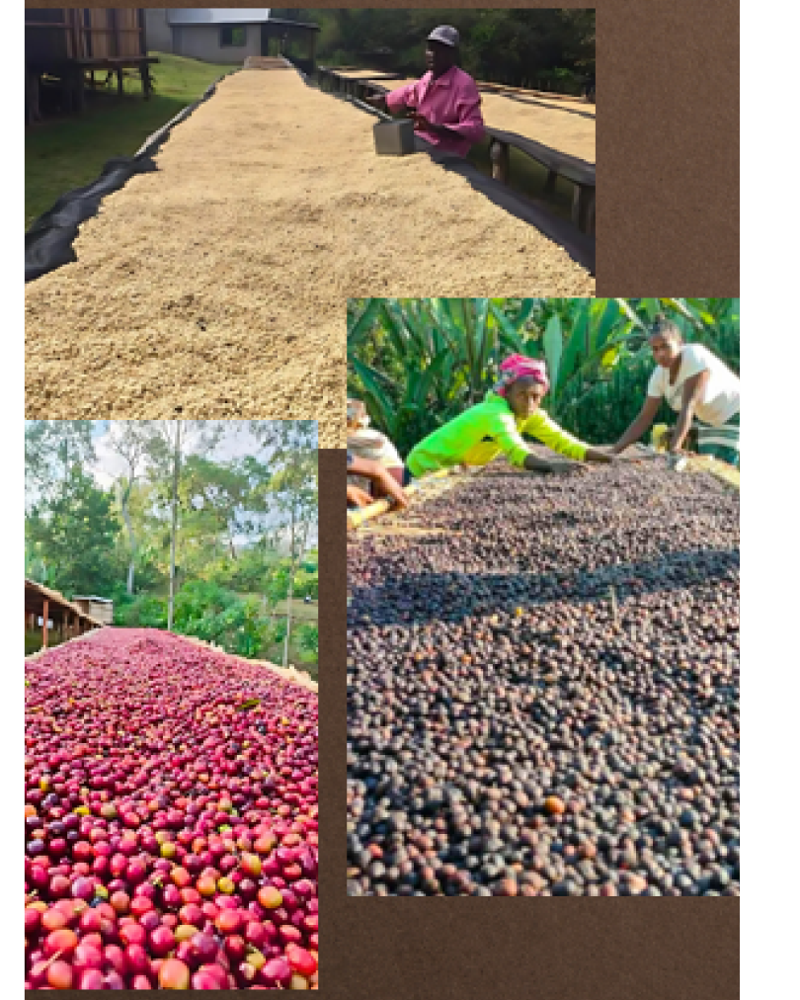

Traceable Sourcing
Every coffee lot we export carries a clear journey — from farm and washing station, to mill, to the bag in your warehouse.

Premium traceable Kenyan Arabica coffee sourced from the fertile highlands of Kenya and delivered to specialty coffee buyers across the globe.
Savannah Bean Coffee Ltd is an origin-based Kenyan specialty coffee exporter. We work shoulder-to-shoulder with farmers, cooperatives and washing stations across the Kenyan highlands to source coffees of true character — and deliver them, with full traceability, to the roasters and importers who value them most.
From quality control to documentation and international logistics, every step is handled with the professionalism global buyers expect and the care that origin deserves.
Read Our Story →
Every coffee lot we export carries a clear journey — from farm and washing station, to mill, to the bag in your warehouse.
Strong, long-standing partnerships with farmers, cooperatives and washing stations across the Kenyan highlands.
Carefully cupped and selected lots with the distinctive bright acidity, complexity and structure that define Kenyan specialty coffee.
Professional handling, documentation, certification and international shipping support tailored to each buyer's market.

Our flagship grade — bright acidity, refined complexity and a clean, lingering finish.

Balanced sweetness with vibrant character — a versatile, expressive specialty lot.

Unique single-bean structure with concentrated flavor and a syrupy, intense cup.

Exceptional small-batch coffees selected for distinction, complexity and origin character.
The Nandi Highlands rise above 1,800 metres into rich volcanic soils, cool mountain air and the reliable rhythm of bimodal rains. It is here — in the slow ripening of cherries under generations of farmer care — that Kenyan coffee earns its singular profile: bright fruit acidity, layered sweetness and a structure unlike anywhere else on earth.

We build long-term relationships with the buyers we serve — bringing consistency, transparency and reliability to every shipment, every season.
Reliable quality and supply, harvest after harvest.
Open communication on pricing, lots and origin.
Professional documentation and on-time shipping.
Long-term relationships built on shared success.